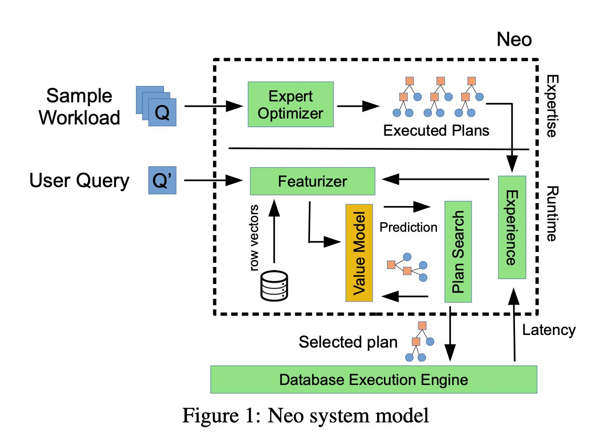
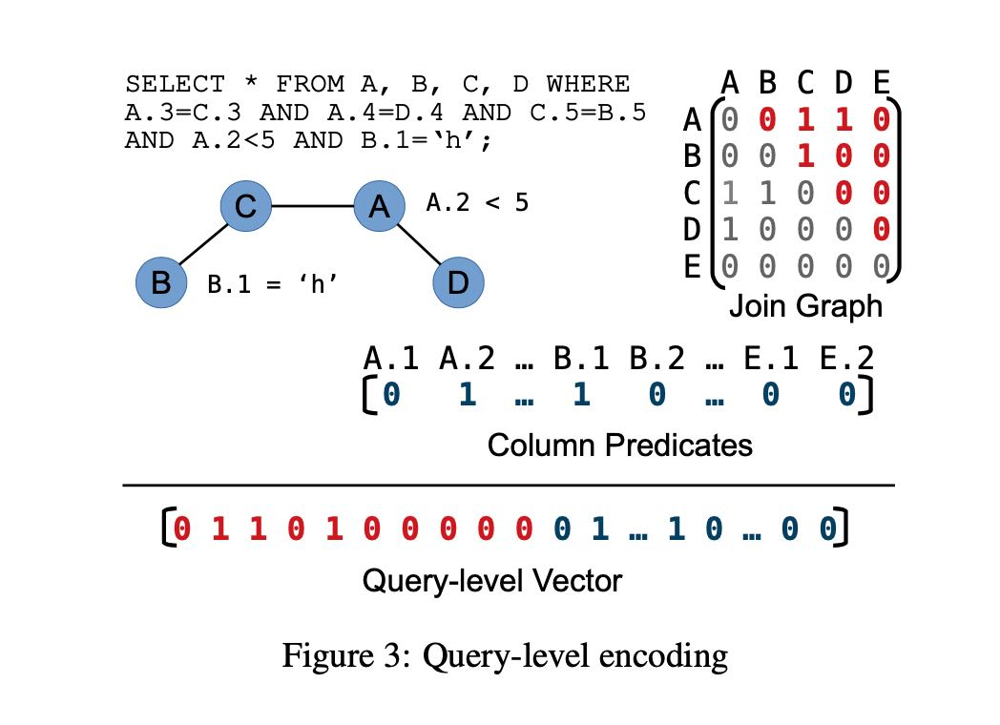
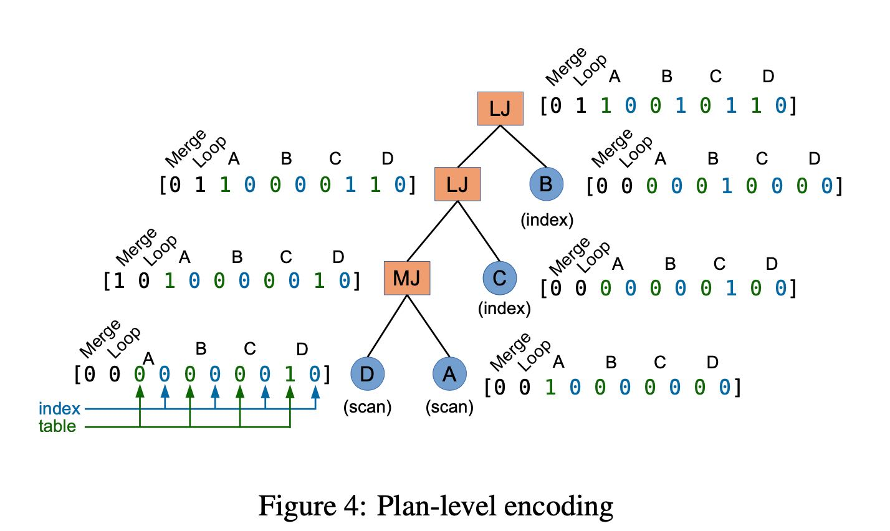
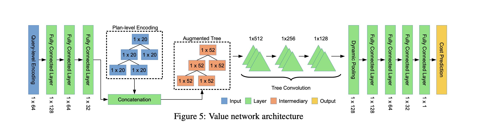
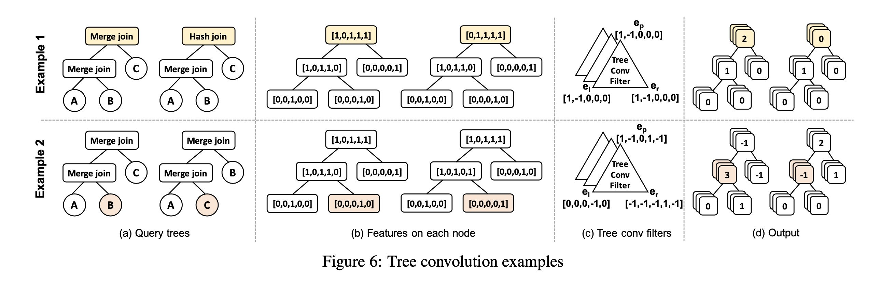

Neo A Learned Query Optimizer
怎么实现一个可以自己学习的query optimizer. 大致思路是：
- 根据历史的execution plan和execution latency来训练模型
- 根据这个模型，在query optimizer阶段来指导搜索怎么找到更好的模型
- 最后不断地形成反馈，得到更多的训练数据。
看完整个论文，觉得这个和AlphaGo是很像的。AlphaGo包括value network和policy network. 其中value network用于评估棋局，而policy network用于怎么搜索下一步。但是这个NEO系统其实没有一个很强大的policy network，靠的是bottom up的方法来搜索cost最小的plan. 这种方法和cascade optimzier差异比较大，好像是starburst optimizer.
整个过程大概是下面这样的，里面最重要的两个问题是：a) 怎么对plan进行表示和训练模型 b) 怎么使用这个模型来进行搜索。

模型训练要对数据进行表示，表示分为两个部分：query encoding和plan encoding. query encoding比较强调逻辑是怎么样的，选择了那些表和哪些列，如果是join的话还需要表示成为矩阵。对于column predicate, 可以有好几种方式表示 1) 1-hot 2) hist 3) r-vector. 这个r-vector文章后面讲到怎么训练，大致思路是参考word2vec的思路分析这个列之前values的embedding. 
而plan encoding则强调具体plan信息，比如是hash join还是sort-merge join等 
有了这个数据表示，接下来就是模型了。模型的cost function可以是latency, 也可以是和latency相关的其他指标，主要是想看优化什么方面了。
模型大致是一个深度神经网络：
- query encoding 通过几个全连接神经网络得到固定大小的vector
- 然后这个vetor和plan-encoding进行拼接，得到augmented tree
- 使用tree convolution进行采样得到多组tree
- 然后经过dynamic pooling(min/max/avg)将tree展开重新放入到全连接网络
TODO:这里我有点不太明白是如何将不同的query的query encoding + plan encoding表示成为固定大小feed给模型的。按照论文，不同query的输入大小是|J| + 2|R|. 或许论文是简化了这点？

tree convolution和cnn convolution类似，主要是寻找tree spatial correlation.

我们现在有这个模型了，可以给定一个complete plan来预测latency. 接着问题就是怎么根据这个模型来有效地探索空间呢？文章的说法叫做 "DNN-guided plan search" 大致思想是先从subplan开始搜索，每个subplan可以被包含在不同的complete plan里面，选择lowest cost complete plan的cost, 作为这个subplan的代价。然后使用min-heap每次都优先选择cost最低的subplan, 然后根据这个subplan去扩展。我不是太清楚里面应该怎么实现，但是这种实现方式和目前主流的cascade query optimizer思路是不同的，整个起来估计会比较难。
最后论文还说了是否可以尝试alpha-zero的方式，不基于现有的query optimizer给出的knowledge从头学习一个呢？很难，因为这个学习成本有点高，因为如果选出的plan不好的话，那么有可能需要执行很久。如果使用cutoff time来作为代替的话比如cutoff time = 7min, 那么7min和1hour之间不存在任何差别，其实许多知识是没有办法学习到的。
[!NOTE] Since gathering demonstration data introduces additional com- plexity, it is natural to ask if demonstration is necessary at all: is it possible to learn a good policy from zero knowledge? While pre- vious work [35] showed that an off-the-shelf deep reinforcement learning technique can learn to find query plans that minimize a cost model without demonstration data, learning a policy based on query latency (i.e., end-to-end) is difficult because a bad plan can take hours to execute. Unfortunately, randomly chosen query plans behave exceptionally poorly (i.e., 100x to 1000x worse [26]), po- tentially increasing the training time of Neo by a similar factor [36].
We attempted to work around this problem by selecting an ad- hoc query timeout t (e.g., 5 minutes), and terminating query execu- tions when latencies exceed t. However, this technique destroys a good amount of the signal that Neo uses to learn: join patterns re- sulting in a latency of 7 minutes get the same reward as join patterns resulting in a latency of 1 week, and thus Neo cannot learn that the join patterns in the 7-minute plan are an improvement over the 1- week plan. As a result, even after training for over three weeks, we did not achieve results even on par with the PostgreSQL optimizer.